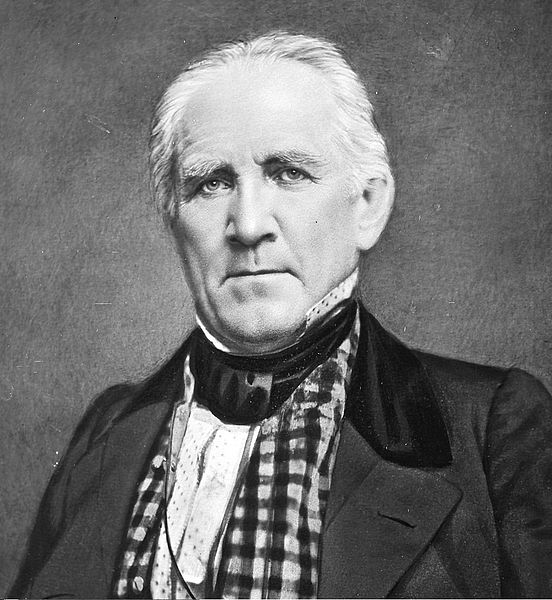

Х'ю́стон, Г'ю́стон (англ. Houston) — четверте за кількістю жителів місто в Сполучених Штатах Америки та найбільше місто в штаті Техас із населенням 2 319 603 людини на 2017 рік. Місто є адміністративним центром округу Гарріс і також належить до території округів Форт-Бенд і Монтгомері. Воно є головним економічним центром агломерації Великого Х'юстона із сумарною кількістю населення 6 772 470 людей на 2016 рік. Місто лежить за 50 кілометрів від Мексиканської затоки на прибережній рівнині.
Х'юстон був заснований 30 серпня 1836 року та ввійшов до складу Республіки Техас 5 червня 1837 року, названий на честь Семюела Х'юстона — головнокомандувача армії Техасу під час Техаської революції та президента Республіки Техас. Швидкий розвиток порту та залізниці в XIX столітті, а також початок видобування нафти та прийдешній розвиток нафтової промисловости у XX столітті спричинилися до швидкого зростання кількости населення. В 1960-х роках кількість жителів перейшла за один мільйон людей, а в 2000-х — два мільйони.
Місто є провідним світовим центром енергетичної промисловости, а економіка міста також представлена підприємствами в галузі аеронавтики, транспорту та охорони здоров'я. Найважливішими об'єктами для економіки й інфраструктури міста є космічний центр імені Ліндона Джонсона, найбільший американський міжнародний торговий порт, Х'юстонський судноплавний канал, найбільший у світі Техаський медичний центр.
|  |
Місто назване на честь Семюела Г'юстона — головнокомандувача армії Техасу під час Техаської революції (1835—1836) та президента Республіки Техас (1836—1838, 1841—1844). Крім офіційної місто має ще 12 назв. Найпоширеніша назва Х'юстона — «Космічне місто» (англ. Space City). Назва дана через те, що тут розміщений космічний центр імені Ліндона Джонсона. В американському розмовному мовленні популярною є фраза: «Х'юстоне, у нас проблема» (англ. Houston, we’ve had a problem), що з'явилося після невдалої місії Аполлон-13. У Х'юстоні відбувалися зйомки фільму «Аполлон-13», в основу сюжету якого покладені справжні події місії. ГеографіяХ'юстон має такі координати 29°46′50″ пн. ш. 95°23′11″ зх. д. (29.780472, -95.386342). За даними Бюро перепису населення США в 2010 році місто мало площу 1625,21 км², з яких 1552,93 км² — суходіл та 72,28 км² — водойми. В 2017 році площа становила 1724,87 км², з яких 1648,56 км² — суходіл та 76,31 км² — водойми. |
Згідно з переписом 2010 року, у місті мешкала 2 099 451 особа в 782 643 домогосподарствах у складі 481 570 родин. Густота населення становила 1292 особи/км². Було 892646 помешкань (549/км²).
Расовий склад населення: